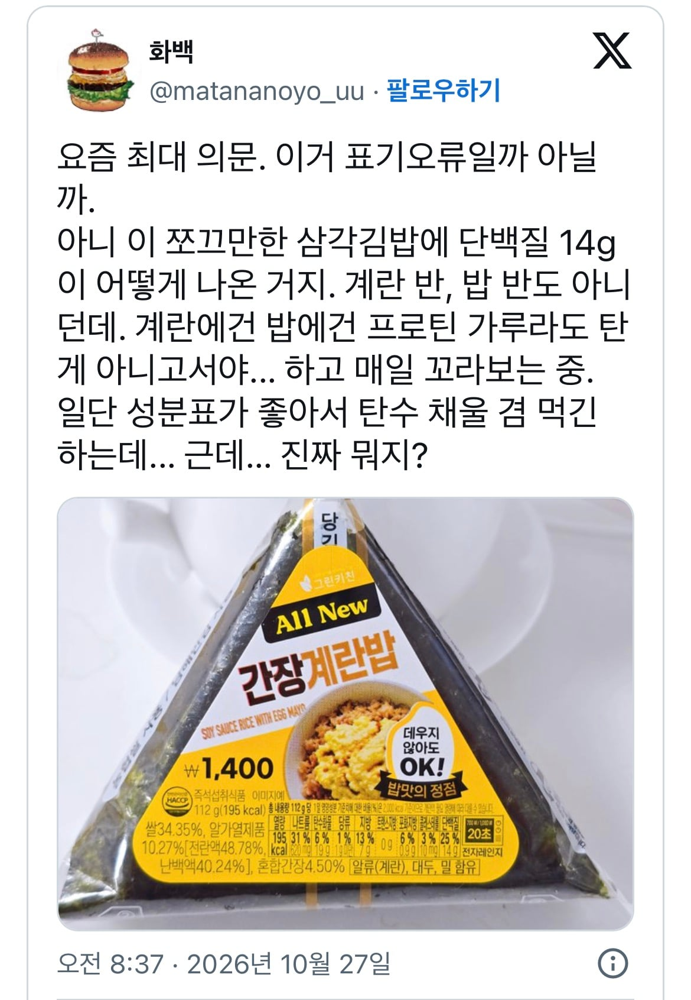
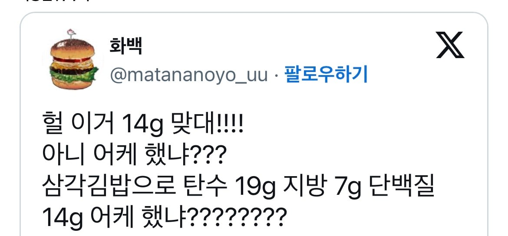
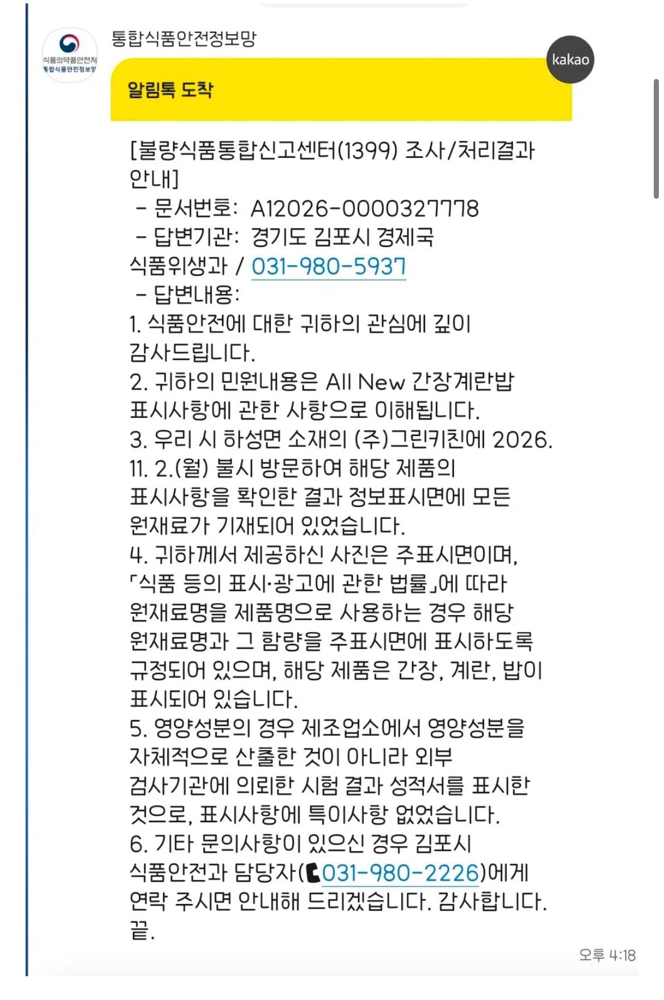
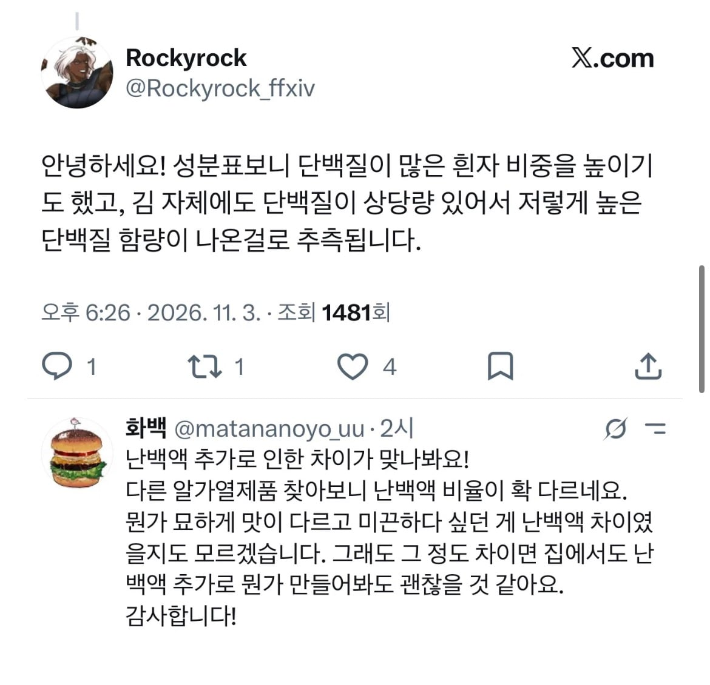

기본 삼김 사이즈가 단백질 14g




기본 삼김 사이즈가 단백질 14g
물
햇반도 210그람중 단탄지 다 합쳐도 80그람이 안돼
아 그러네 ㅋ
알 가열제품이 10퍼인데, 계란은 일반적으로 100g에 단백질이 12g정도.
비율로 치면 1.4g정도가 계란 단백질인데 나머진 대체 어디서 온거임ㅋㅋㅋ잘못됫네 저거
쌀무게 기준으로 밥 무게 생각해봐
최고의 삼김인데?
좋은데 아침에 저거하나
말이되나 고기반찬 편의점 도시락도 25그람 이하인게 대부분인데
ㅋㅋㅋㅋㅋ존나 바이럴같넼ㅋㅋㅋㅋ
너무나도 완벽한 바이럴이다 ㅋㅋㅋㅋㅋ
오? 궁금한 거 신고하면 저렇게 알려주네
나도 앞으로 신기한 음식 다 신고해야겠다
저거 잘 먹고 있었는데 유명해지지말라고!
닭가슴살이 100g에 20g정도인데
맞나..
계란5개정도되야 25그람넘는데 말이..되나?
성분표 어떻게 보는지 모르는 사람이 꽤있긴 하던데
퍼센트는 하루 섭취 영양소 기준 몇퍼센트인지 말해주는거고
그 밑에 g이 들어있는 양임
개인적으로는 삼김 1티어임
닭가슴살에 질린 빵빵이 언니 형아들이 몰려온다
요새 편의점 김밥중에 단백질 함량 높은거 꽤 많음
일부러 노리고 그렇게 만듬
삼김 두개면 아침 단백질 바로 채워지네
밥에 식물성단백질이 포함되어잇으니 저렇게 나오는거지 실제로 근성장에 도움되는 단백질은 저정도 안됨
당장 라면만 봐도 단백질함량 꽤 높은데 근육합성에는 도움안됨
그러면 그 대두단백질인가 그거는 먹어도 근육 안생기는거임?
그래서 두유는 효과없고 유동식에는 동물성 단백질 넣는거임?
대두단백질은 최근 연구에서 유청단백질에 견줄정도로 괜찮다고하더라
근데 아직 사람들 인식이 동물성단백질이 최고라고함
내가 말하는건 그거말고 기본적으로 밀이나 쌀에 들어있는 단백질을 말한거임
아하 그런거구나, 설명 너무 고마워!
파스타도 그런거야?
밀 자체가 단백질 함유가 의외로 높아서 자주먹는데
나는 그렇게 알고있음 식물성단백질에는 아미노산이 적어서 근육합성엔 불리하다고함
자세한건 ai ㄱㄱ 나도 좆문가임
평소에 먹을꺼 없으면
계란 + 파스타 위주로 먹는데
고기를 주력으로 해야 겠다
계란은 동물성단백질이라 굿인뎅 ㅋㅋ 파스타도 입자가 단단해서 소화가 느리기때문에 살도 안찌고
베스트조합임
진짜라면 저거 만든쪽에서 단백질을 존나 강조했을거임 ㅋㅋ
대두나 완전단백질만 써야 단백질로 표기할수있으면 좋겟는데 아니여도 단백질로 표기할수있음 법이 바껴야됨
112그람짜리 삼각김밥에 19g 탄수화물이랑 14g 단백질 지방 7g 빼면 나머지 72그람은 뭐임대체?